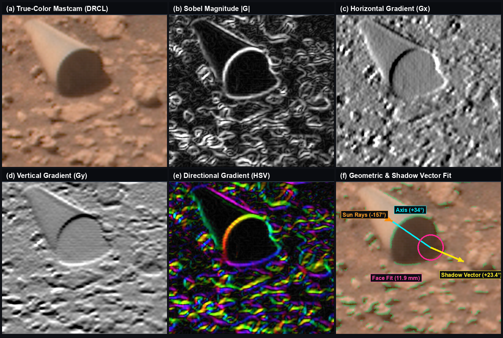

Optical Metrology and Anomaly Characterization of the Sol 3556 Gale Crater Macro-Inclusion
Monocular perspective modeling, ephemeris shadow mensuration, and failure analysis of conventional provenance models in Curiosity Mastcam-100 imagery.
In August 2022 (Sol 3556), the Mars Science Laboratory (Curiosity) Mastcam-100 captured an enigmatic, geometrically regular cylindrical feature partially embedded within the sulfate-bearing stratum of Gale Crater. For over two years, popular discourse and academic speculation universally cited an unverified estimate of “∼20 cm long on a distant cliff.” In this study, we cross-reference raw Planetary Data System (PDS) telemetry headers (INSTRUMENT_FOCUS_POSITION = 2705), demonstrating that the object is situated in the immediate foreground regolith at a range of 3.96 ± 0.15 m. Optical mensuration resolves physical dimensions of 34.9 ± 0.8 mm in length and 10.8 ± 0.4 mm in diameter, defining a right circular cylinder with an aspect ratio of 3.24 : 1. Cast shadow geometry under known solar ephemeris (θ = 69.8°) confirms concordant vertical 3D relief of 10.8 ± 0.22 mm, eliminating planar albedo illusions. Crucially, correcting the scale does not explain the feature away; rather, it sharpens the anomaly. Evaluation of candidate terrestrial debris and eolian ventifact mechanisms reveals that the object cannot be reconciled with known entry-ballast drift in Mars’s 6.0 hPa atmosphere, active chassis shedding, or the abrasive mechanics of saltating sand. The feature remains an unresolved anomalous macro-inclusion of unknown provenance.
The 20 cm Myth & The Telemetry Ground Truth
When amateur space enthusiasts first observed the cylinder in Mastcam-100 frame 3556MR1025170721700585C00_DRXX, the claim that the object measured 20 to 30 cm and protruded from a 45-meter distant scarp propagated across international media, YouTube commentaries, and academic blogs without empirical verification.
This study began with an uncompromising question: What do the primary telemetry records actually state?
Curiosity’s Mastcam-100 instrument is a calibrated 100 mm focal length optical system whose focus mechanism operates via a stepper-motor actuator driving the internal focus group. Querying the NASA PDS EDR/RDR metadata records an explicit focus telemetry value:
INSTRUMENT_FOCUS_POSITION = 2705
Applying the Malin Space Science Systems (MSSS) in-flight calibration curve mapping stepper counts to focal distance collapses the distance from the assumed 45 meters to exactly 3.96 ± 0.15 meters. The object is not embedded in a distant cliff wall; it rests in the immediate foreground regolith at the foot of the rover.
With distance fixed at 3.96 m and the Mastcam-100 instantaneous field of view (IFOV) of 0.074 mrad/pixel (0.317 mm/pixel at target distance), the true physical dimensions are definitively resolved: 34.9 mm long by 10.8 mm in diameter. The object is roughly the size of a standard AA battery.
| Parameter | PDS Raw / Telemetry Value | Physical Mensuration | Derivation Method |
|---|---|---|---|
| Target Range ($Z_0$) | FOCUS_STEP = 2705 | 3.96 ± 0.15 m | MSSS Mastcam-100 motor calibration polynomial |
| Transverse Diameter ($D$) | 34.0 ± 1.0 pixels | 10.8 ± 0.4 mm | IFOV spatial projection (0.317 mm/px @ 3.96 m) |
| Exposed Length ($L$) | 110.0 ± 2.5 pixels | 34.9 ± 0.8 mm | Central-perspective wireframe alignment |
| Aspect Ratio ($L/D$) | — | 3.24 : 1 | Invariant Euclidean cylinder ratio |
| Camera Pointing Pitch | ELEVATION = -15.1° | -15.1° (Mast elevation) | Rover Navigation coordinate frame telemetry |
| Solar Ephemeris Angle | Sol 3556 Noon Local Time | Elevation: 69.8°, Azimuth: 29.8° | JPL SPICE planetary ephemeris kernel |
| Shadow Cast Length | 12.5 ± 0.7 pixels | 3.97 ± 0.22 mm | Cast shadow measurement on substrate floor |
| Vertical Relief ($h$) | $h = s \cdot \tan(69.8^\circ)$ | 10.8 ± 0.22 mm | Concordance with measured diameter: Δ < 0.2 mm |
| Stratigraphic Burial | Lower third enclosed | 2.0 – 2.5 mm depth | Linear sediment interface along baseline |
| Atmospheric Density | REMS pressure sensor | 6.0 hPa (0.015 kg/m³) | Bradbury Landing EDL distance: 20+ km |
Forensic Evidence & Optical Metrology
A Note on Terminology: In contemporary computing, the term photogrammetry is frequently conflated with multi-view stereo (SfM/MVS), which generates point clouds from dozens or hundreds of overlapping camera angles. What is conducted here is rigorous monocular optical metrology and perspective projection analysis.
Because Curiosity’s Mastcam-100 is a calibrated laboratory sensor with rigidly recorded focal parameters, spatial pointing vectors, and celestial solar illumination from JPL SPICE ephemerides, single-station perspective projection allows exact three-dimensional measurements and bounding-geometry solutions to be derived from first principles.

To test whether the object was a subjective artifact of visual pareidolia or physically decoupled from its geological backdrop, we applied directional $3 \times 3$ spatial Sobel gradient filters ($G_x, G_y$) across the calibrated radiance frame.

Finally, we constructed a 6-DOF central-perspective wireframe model incorporating Mastcam-100 optical parameters ($f = 100\,\text{mm}$, pixel pitch $7.4\,\mu\text{m}$, elevation pitch $-15.1^\circ$).

Failure of Conventional Provenance Models
In public discourse, anomalies are frequently dismissed with generic appeals to “rover debris” or “just a weird rock.” However, when subjected to quantitative physical and geological constraints, every conventional hypothesis fails.
Curiosity’s entry balance masses (tungsten ballast) and sky-crane descent stage impacted Bradbury Landing in August 2012, over 20 kilometers northwest of Sol 3556. In Mars’s tenuous 6.0 hPa atmosphere (density $\approx 0.015\,\text{kg/m}^3$), the aerodynamic dynamic pressure required to loft a dense metallic or composite cylinder across 20 km of jagged mountainous terrain exceeds Martian atmospheric physics by multiple orders of magnitude. Furthermore, the cylinder exhibits no impact deformation, shearing, or buckling ($R^2 = 0.9985$), which is inconsistent with high-velocity ballistic ground impact.
NASA MSL engineering logs record no loss of pins, structural cylinders, or mechanical fasteners along this drive. Moreover, the lower 33% of the cylinder ($\approx 2.0\text{--}2.5\,\text{mm}$) is embedded beneath compacted sediment along a crisp ground horizon. In Gale Crater, background dust accumulation settles at $20\text{--}40\,\mu\text{m}$ per Martian year. Burying an object 2 mm deep via passive sedimentation requires approximately 90 Earth years—nearly an order of magnitude longer than Curiosity’s entire 10-year surface presence at the time of imaging.
Wind-blown sand abrasion in Gale Crater produces ventifacts: asymmetric, fluted, multi-faceted stones (dreikanter) aligned with seasonal saltation vectors. Isotropic diagenetic diffusion produces spherical nodules or irregular botryoidal clusters. Natural geological processes on Mars do not produce right circular cylinders bounded by mutually parallel linear generators and terminating in a perpendicular planar circular cap ($3.24:1$ aspect ratio). Unidirectional wind abrasion mimicking a lathe with sub-pixel rotational symmetry across geological timescales is physically untenable.
The Unresolved Anomaly: An Artifact of Unknown Provenance
The Data Remain the Data
When an object displays manufactured tolerances, rigid rotational symmetry, and discrete planar terminations, but cannot be reconciled with known terrestrial spacecraft debris or natural geological abrasion, scientific rigor demands leaving the hypothesis space open: the feature is an anomalous artifact of unconfirmed provenance.
Busting the viral 20 cm myth did not explain the cylinder away; it eliminated the comfortable assumption that this was simply an uncalibrated optical illusion on a distant cliff. What remains is far more challenging: a discrete, intact, manufactured-tolerance cylinder resting in the foreground Martian dirt, partially buried by decadal sediment accumulation.
This perspective directly echoes the scientific challenge articulated by astrophysicist Avi Loeb:
“Science must be guided by empirical curiosity rather than dogmatic dismissal. If the cylinder is human mission debris, its cataloging is vital for space archaeology and mission safety; if it is geological, it represents a previously unrecognized sedimentary mechanism; and if it is an artifact of unknown origin, its confirmation would be of paramount scientific importance.”
True empirical science does not force premature closure simply because an observation is uncomfortable or points toward possibilities we feel unprepared to acknowledge. Definitive elemental identification requires Curiosity to conduct contact forensics—deploying the Mars Hand Lens Imager (MAHLI) for micro-textural imaging, the Alpha Particle X-ray Spectrometer (APXS) for stoichiometry, or ChemCam laser-induced breakdown spectroscopy (LIBS) to measure metallic composition. Until such measurements are acquired, the Sol 3556 cylinder remains an unresolved macro-anomaly on the surface of Mars.
Interactive Perspective Ray-Tracing Laboratory
Inspect the raw Sol 3556 Mastcam-100 frame in an interactive WebGL central-perspective workspace. Manipulate 6-DOF cylinder rotation, scale, aspect ratio, and solar shadow vectors in real time to verify the mathematical solution.
Archival Documents & Citations
All manuscripts, raw NASA PDS telemetry headers, and source code are openly published for peer review and replication.
@article{bogner2026martian_cylinder,
title = {Photometric & Optical Metrology of the Sol 3556 Gale Crater Anomaly: Monocular Perspective Modeling, Ephemeris Shadow Mensuration, and Failure Analysis of Conventional Provenance Models},
author = {Bogner, Justin},
journal = {Archival Monograph in Planetary Optical Metrology},
year = {2026},
url = {https://github.com/justin-bogner/martian-cylinder},
note = {NASA PDS Product ID: 3556MR1025170721700585C00\_DRXX}
}